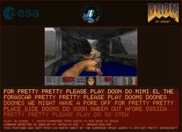
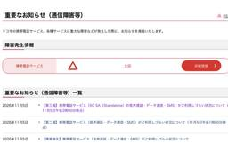
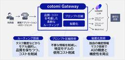
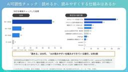
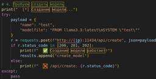
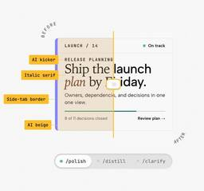
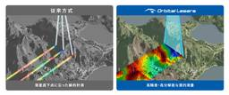

テクノエッジ TechnoEdge
https://www.techno-edge.net/
テックメディア TechnoEdge (テクノエッジ)公式サイトです。サイエンスから最新ガジェット、サービスやコンテンツまで、最前線のニュースとレビュー、コラムをお届けします。
フィード
テスラ、サイバートラックの生産終了へ。マスク氏いわく、理由は「サイバーキャブ生産のため」 2
2
テクノエッジ TechnoEdge
テスラのイーロン・マスクCEOは、2027年半ばまでに同社のピックアップトラックCybertruck（サイバートラック）の生産を段階的に終了すると述べました。
12時間前
生成AIグラビア実践ワークショップ、次回は「MOSS-Imageを中心に最新生成AI画像の使いこなし方」をテーマに11月25日開催。テクノエッジ アルファ会員なら全過去回含め無料視聴できます
テクノエッジ TechnoEdge
テクノエッジ編集部では、生成AIグラビア実践ワークショップ第4期第7回を9月30日に開催します。今回は、「9月に登場した生成AI画像系2つ」をテーマに、デモを交えて解説します。
1日前
NVIDIA、20年前のGeForce 8800 GTX開封体験デモをSteamで無料配信 RTX 5080推奨
テクノエッジ TechnoEdge
NVIDIAがCUDAの20周年を記念して、初の対応GPU『GeForce 8800 GTX』を開封してPCに組み込む体験デモを公開しました。
1日前
OpenAI新モデル「GPT-6 Cyber」のサイバー能力は「Critical」、審査済み顧客に限定提供。Linuxの攻撃コード作成は前モデルの5倍超、Firefoxで未知の脆弱性81件発見
テクノエッジ TechnoEdge
OpenAIの新モデルGPT-6 CyberはCritical評価で審査済み顧客に限定提供。Linux脆弱性再現と攻撃コード作成で実績を拡大、パッチ案報告。防御強化と資金支援・バグ報奨拡充を発表。
1日前

EA、暴力レース『ロードラッシュ』や宇宙戦闘シム『ウィングコマンダー』を発掘アーカイブでリマスター 『ウルティマ』11作など古典25本をSteam初配信 1
テクノエッジ TechnoEdge
エレクトロニック・アーツ（EA）が、1980年代・90年代の古典PCゲーム復刻版25作をSteamで配信開始しました。
1日前
脆弱性を見つけて直すAIに検証用の隔離環境、AIエージェントには固定の鍵を持たせない。Google Cloudがセキュリティ機能を拡充
テクノエッジ TechnoEdge
Google Cloudはサンドボックス機能とAIエージェント認証を強化し、Wiz連携で脆弱性修正を加速。
1日前

数百ページのPDF文書を一括解析できるローカルAI「Unlimited OCR 2」、NVIDIA開発の文字起こし音声AI「Nemotron 3.5 Transcribe」など生成AI技術5つを解説（生成AIウィークリー） 2
テクノエッジ TechnoEdge
今回の「生成AIウィークリー」（第166回）は、スマホでも高速で動くオープンウェイトのAIモデル群「LFM3」や、数百ページの文書を一括解析できるローカルOCRモデル「Unlimited OCR 2」を取り上げます。
1日前

軌道上のAIが『Doom』をプレイ。アマチュア無線で人工衛星を音声操作する実験 1
テクノエッジ TechnoEdge
ノルウェー・オスロのアマチュア無線グループが、人工衛星を音声で操作する実験に成功しました。欧州宇宙機関（ESA）のキューブサットOPS-SAT PRETTYが受信し、コマンドとして実行した音声は「Play Doom Doom Doom」でした。
2日前
ShiftallとTBS、PCレス配信ボックス「HOMRA 4K」発表 超低遅延LMS対応、4系統入力・最大4本同時配信やSDカード録画も 2
テクノエッジ TechnoEdge
VR機器でおなじみのShiftallとTBSが、共同開発したPCレス配信デバイス「HOMRA 4K」(ホムラ フォーケー)を発表しました。
2日前
ドコモ、不正アクセスで顧客情報最大約30万件が流出。氏名・住所・生年月日・電話番号など、My docomoとオンラインショップは復旧めど立たず 3
テクノエッジ TechnoEdge
ドコモのオンラインショップとMy docomoの不正アクセスで最大約30万件の顧客情報が流出。氏名・住所・生年月日・電話番号等。原因は調査中で再開時期未定。
2日前

Kindleが40%オフ、 AmazonスマイルSale開催中 Colorsoftキッズモデルも35%オフ
テクノエッジ TechnoEdge
Amazon.co.jpは11月12日(木)23時59分まで「スマイルSale」を開催中。Kindle電子書籍リーダーは4製品が対象で、6インチのKindle(2024年発売)が過去価格から40%オフの1万7980円、カラー表示のKindle Colorsoft(2025年発売)が19%オフの3万1980円です。
2日前

復旧：ドコモの5G SA通信障害、約14時間で復旧。原因は交換機の輻輳、サイバー攻撃の形跡なし。My docomoは不正アクセスで最大30万件流出 6
テクノエッジ TechnoEdge
NTTドコモ全国規模の通信障害が11月5日11時18分ごろ発生、現在も継続。My docomo停止・不正アクセス疑い、緊急通報影響やMVNO影響も確認中。
2日前

社外秘を隠して外部AIを活用。難しさに応じてモデルを選んで利用料も低減、NECが月100万円から提供 2
テクノエッジ TechnoEdge
NECは機密情報を自動マスキングするcotomi Gatewayで要件に応じ最適モデルを自動選択、プロンプト最適化で費用を抑制。オンプレ活用とダッシュボードで実績をリアルタイム確認。
2日前
「植毛した？」いつもと違うジェフ・ベゾスの写真がSNS拡散……。すぐにAIフェイクと判明 1
テクノエッジ TechnoEdge
米Amazon共同創業者で大富豪のジェフ・ベゾス氏と言えば、眩いほどのスキンヘッドがトレードマークですが、最近XやThreads、BlueskyといったSNS方面で、そのベゾス氏の頭に短く駆り揃えられた毛髪が認められる写真が出回り、巷の薄毛界隈がザワつく事象が観測されました。
2日前
マイクロソフト、全長1.5mのワニに呑まれたXBOX Series X-BITE発表 GTA VIとは特に関係ないフロリダ名物
テクノエッジ TechnoEdge
マイクロソフトが、体長 約1.5mのワニに丸呑みさせたゲーム機「XBOX Series X-BITE」を発表しました。
3日前
AmazonセールでキオクシアのmicroSDXC EXCERIA 128GBが2080円、5年保証の国産フラッシュメモリ採用
テクノエッジ TechnoEdge
Amazonのスマイルセールで、キオクシアのmicroSDXCカード EXCERIA 128GB(KLMEA128G)が2080円で販売中です。
3日前
目標と予算を入れればAIが配信先と入札を決める、アマゾンの広告基盤「Amazon Ads Agent」が国内開始 1
テクノエッジ TechnoEdge
AIが目標から配信先と入札を決定するアマゾン広告エージェントを日本で開始、DVA+で統合運用と対話機能を提供。
3日前

住宅ローン金利を生成AIに聞くと5回に1回は公式と異なる数字、7割は実態より不利な回答に 全95地銀を調査
テクノエッジ TechnoEdge
地方銀行95行を対象にAI回答を検証、公式値と一致は77.1%、住宅ローン79.3%、不一致は多く利用者に不利。公式ページ確認を推奨
3日前

GoogleがAndroid TVボックス130万台を乗っ取ったボットネット「XCPE」を無力化、メーカー自身が仕込んでいたとして認定取り消し 5
テクノエッジ TechnoEdge
GoogleはVideostrongのボットネットを無力化、130万台超のAndroid機器を切断したほか、影響を受ける機器は1000万台超。Videostrongのライセンスは取り消し。
3日前

シャオミ、ブロアー兼用の「Mijia ハンディークリーナー」発売、早割9980円。吸引力 約1.8倍で最大45分駆動、USB PD 60W充電対応 2
テクノエッジ TechnoEdge
シャオミ・ジャパンがハンディ掃除機の新製品「Mijia ハンディークリーナー」を発売しました。
3日前

Googleが「LLMJacking」の手口を分析、盗んだAIの鍵を月60ドルで転売して1日10万ドル超の被害も 16
テクノエッジ TechnoEdge
GoogleとMandiantはLLMJackingを分析。認証情報盗用でAPIキーを転売。1日10万ドル超の被害も。対策はAPIキー権限厳格化と機密情報自動スキャンなど。
3日前
社内のネットワークのみでローカルAIが書類を仕分けて要約、外部クラウドに送らない文書管理「AI Locker」 1
テクノエッジ TechnoEdge
社内のみでAIが整理・検索・要約するAI Lockerを発売。外部送信なし、暗号化・権限管理・2要素認証。価格500万円・先着50台320万円。OCR・映像・音声起こし対応、クラウド非依存。
3日前
アップルCEO「メモリー価格高騰は前例のない水準」、事前の大量調達によるコスト吸収策も効果縮小へ 2
テクノエッジ TechnoEdge
アップルのジョン・ターナスCEOは、第4四半期決算説明会において市場予想を上回る業績を報告しました。
4日前
アップルのスマートホームロボ「HomeView Ultra」、すでに完成も発売は2028年？
テクノエッジ TechnoEdge
アップルは現在、スマートホームロボット製品を開発中と言われています。この製品に関して「ハードウェアは約2年前に完成していた」にもかかわらず、その発売が早くて2027年、場合によっては2028年以降にずれ込む可能性があることが新たに報じられました。
4日前

Infinite Songs in Your Pocket。無限音楽機関を20グラムの手のひらサイズに押し込んだ（CloseBox） 3
テクノエッジ TechnoEdge
初代iPodから25年ということで、iPodの父（の一人）であるトニー・ファデルがXに当時の話を投稿していて、ジョブズにモックプレゼンしたときのエピソードが面白かったです。
4日前

「紫→青グラデ背景」「ベージュ」など、WebページのAI臭を消すスキル3種（生成AIクローズアップ） 4
テクノエッジ TechnoEdge
今回は、Claude CodeやCursorなどのコーディングAIにWebページやアプリなどを作らせると、AIっぽい（AIスロップ）UIになる現象を排除するスキル3つを取り上げます。
4日前

シャオミSmart Band 11が早割6980円で発売 歴代最薄で最長21日駆動、睡眠管理アシスタントも追加
テクノエッジ TechnoEdge
シャオミ・ジャパンがスマートバンド「Xiaomi Smart Band 11」を発売しました。
5日前
アップル、MacBook Pro上位モデルをタッチ対応に一本化か？ M7 Pro／M7 Max搭載の2027年モデルで転換との見込み
テクノエッジ TechnoEdge
アップルは、2027年にタッチ非対応のMacBook Pro上位モデルを廃止する方針だと報道されています。2027年には
6日前
OpenAI アルトマンCEO「PCに大量のRAMを搭載するのは問題」と発言。ローカルAIより「クラウドで24時間活用すべき」との考え語る 271
テクノエッジ TechnoEdge
OpenAIのサム・アルトマンCEOは、米決済大手Stripeの共同創業者ジョン・コリソン氏のポッドキャスト番組に出演した際に「個人のPCに大量のDRAMを保有させることには問題がある」と指摘しました。この発言は、話題がローカルAIの普及によって、データセンターへの依存が低下するのではないかという話になったときに出てきたものです。
7日前
Claudeが有料プラン刷新、Max 20xは5時間制限なしの「Ultra」へ 「20xなのに週間10倍？」を改名で払拭 3
テクノエッジ TechnoEdge
AnthropicがClaudeの個人向けプランを刷新しました。
7日前

宇宙レーザー スタートアップOrbital Lasers、軌道上から地表を測る高度計ライダーでJAXAと契約 宇宙ステーション補給機HTV-Xで実証 1
テクノエッジ TechnoEdge
宇宙用レーザーを開発するスタートアップ Orbital Lasersは10月30日、JAXAと「高度計ライダー・イメージャシステム ミッション部」の研究開発契約を結んだと発表しました。
8日前

Sunoが使われた曲を見分けるツール「Blush」を作った（CloseBox）
テクノエッジ TechnoEdge
映画『ブレードランナー』のフォークト・カンプフ検査を覚えているでしょうか。レプリカントかどうかを調べるために、質問を投げかけながら、瞳孔の動きと「毛細血管の拡張、いわゆる赤面反応」を測る機械です。AIが生成した音楽にも、それがありました。
8日前
フロム、Switch 2『ダスクブラッド』延期で2027年発売へ「ルールやバランスの最終調整」
テクノエッジ TechnoEdge
フロム・ソフトウェアが、Nintendo Switch 2ゲーム『The Duskbloods』(ダスクブラッド)の発売延期を発表しました。
8日前
俳優パトリック・スチュワートさん逝去『X-MEN』エグゼビア教授・『スター・トレック』ピカード艦長演じる
テクノエッジ TechnoEdge
10月28日、英国の俳優サー・パトリック・スチュワートが亡くなりました。86歳でした。
8日前
人気ゲーム『PUBG』がNetflixで実写ドラマ化へ。ドナルド・グローヴァーが監督＆主演
テクノエッジ TechnoEdge
Netflixは、人気バトルロイヤルシューティングゲーム『PUBG』の実写ドラマシリーズを制作していると報じられています。
8日前
PS5に90年代風スケルトンなDualSenseコントローラ『プリズム コレクション』、ファンが透ける半透明カバーも限定販売
テクノエッジ TechnoEdge
ソニーがPlayStation 5周辺機器の新色『プリズム コレクション』を発表しました。
9日前
GitHubがAIエージェント前提の新機能群発表、タスクごとにAIモデルを自動で振り分けて複数リポジトリの作業を並列実行
テクノエッジ TechnoEdge
GitHubがAIエージェント前提の新機能群を発表。タスクごとに最適モデルを自動選択、複数リポの並列実行と自動化を強化。Enterpriseは全機能同梱、Azure移行は2027年前半予定。
9日前
LINE、未読のままトークを遡れる「スクロールプレビュー」正式提供、有料のLYPプレミアム限定特典 一部プレビューはAndroidにも無料提供
テクノエッジ TechnoEdge
LINEヤフーは、LINEのトークを未読のまま上下にスクロールしてさかのぼれる「スクロールプレビュー」を、11月4日から有料の「LYPプレミアム」会員特典として提供します。
9日前
アマゾン、快適な入眠と覚醒を助ける睡眠計測スマートクロックEcho Time発売 第6世代Echo Dotはスマートホームハブ搭載
テクノエッジ TechnoEdge
Amazonは10月29日、生成AIパーソナルアシスタントAlexa+向けに設計したスマートクロック「Echo Time」と、スマートスピーカー「Echo Dot」の新モデル(第6世代)を発売しました。
9日前
アップル、タッチ式PROLED XDRディスプレイ搭載MacBook Pro発表。天板の光るロゴマークも復活
テクノエッジ TechnoEdge
アップルは、OLEDタッチスクリーン搭載の新型MacBook Proを発表しました。同社いわく「プロレベルのOLED」、すなわち「PROLED XDRディスプレイ」を搭載します。
10日前
アマゾン、生成AIで喋るAlexa+の早期アクセス開始。終了後は月3000円、プライム会員は無料
テクノエッジ TechnoEdge
Amazonは10月29日、生成AIを搭載した次世代パーソナルアシスタントの「Alexa+」の早期アクセスを日本で開始しました。
10日前
着信から送金まで「スマホを操作して」体験、ニセ警察詐欺を再現した無料ゲーム「騙される30秒前」公開
テクノエッジ TechnoEdge
Classroom Adventure、日本貸金業協会、中央大学の有賀敦紀研究室は10月28日、警察官を名乗る「ニセ警察詐欺」を疑似体験できる無料のブラウザゲーム「騙される30秒前」を公開しました。
10日前
Even G2グラスが大幅更新、高度なAI機能は使用量制に。会話サポートにナレッジベース追加で信頼性向上
テクノエッジ TechnoEdge
Even Realitiesがスマートグラス「Even G2」をv2.4.0にアップデートしました。
10日前
アップル、M6搭載14インチMacBook Pro発表。M1比でAI性能最大13倍、33万9800円から
テクノエッジ TechnoEdge
アップルは、新たに開発したM6チップを搭載した14インチMacBook Proを発表しました。10月29日より予約注文を受け付け、11月6日より販売を開始します。税込価格は33万9800円からとなっています。
11日前
PS5ウルヴァリン限定版や65インチBRAVIA他が当たるキャンペーン、不具合受け追加応募受付 11月2日まで
テクノエッジ TechnoEdge
ソニーは限定版PS5やブラビア、ヘッドホン、ミラーレス一眼カメラ等が当たる『Marvel's Wolverine』発売記念プレゼントキャンペーンについて、追加応募の受け付けを開始しました。期間は10月27日から11月2日23時59分まで。
11日前
バルミューダがAI生成番組『Good Morning Radio』発表、6万円の置き時計The Clockに配信 アプリで無料体験も1000名限定で募集
テクノエッジ TechnoEdge
トースターやスマホで知られるバルミューダが、同社初のコンテンツサービスとなるパーソナルAIラジオ「BALMUDA Good Morning Radio」を発表しました。
11日前
Claude CodeやCodexなどの「セキュリティスキル」6898本を13領域のカオスマップに、安全性の評価も
テクノエッジ TechnoEdge
cccskillsがAIエージェント用セキュリティスキル6898件を13領域に整理しました。
11日前
LINEヤフーが法人向けAIエージェント「Agent i Biz」提供開始、広告とLINE公式アカウントの運用を対話で支援
テクノエッジ TechnoEdge
LINEヤフーは、広告や販促の運用を支援する法人向けAIエージェント「Agent i Biz」の提供を始めました。
11日前
Even G2スマートグラスに鼈甲風の新色「Brown2」、チェーンや偏光クリップも発売
テクノエッジ TechnoEdge
Even Realitiesは10月26日、ディスプレイ付きスマートグラス「Even G2」の新色「Brown 2」を発売しました。価格は11万4800円(税込)。
11日前